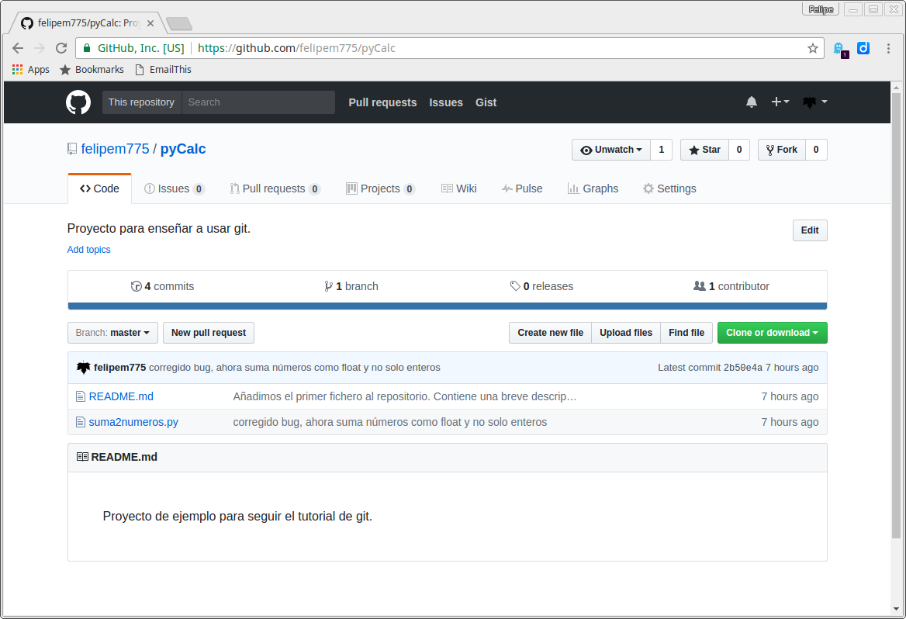
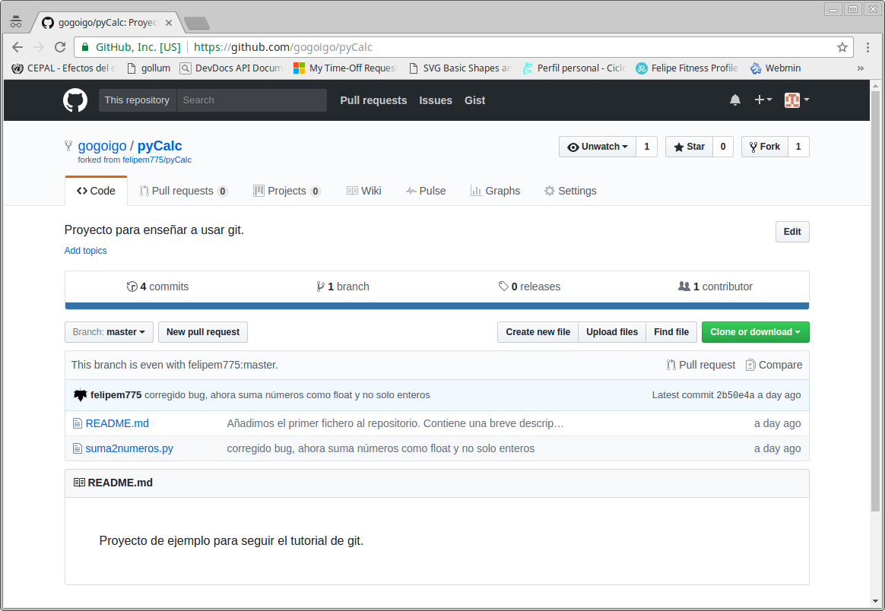

GitHub es una plataforma donde podemos alojar y publicar proyectos que utilicen git. Es gratuito para todos los proyectos que hagamos públicos pero solo las cuentas de pago pueden dar de alta repositorios privados.
Existen otras plataformas donde sí podemos crear repositorios privados, como bitbucket y gitlab, además también podemos montar un servidor de Git dentro del IH.
El motivo de utilizar GitHub se debe a que es mucho más importante, con diferencia, respecto a las otras plataformas.
Es importante destacar que un proyecto git puede sincronizarse con diferentes servicios a la vez, de este modo podemos tener un repositorio en GitHub y en GitLab a la vez, y decidir qué se comparte en cada uno de ellos.
Los proyectos de software libre del IH se encuentran disponibles en la dirección:
https://github.com/ihcantabria
Alta y configuración
Simplemente iremos a la página de registro https://github.com/join y rellenaremos el formulario. Nos enviarán un correo de confirmación a la cuenta que les hayamos proporcionado.
Una vez que tengamos nuestra cuenta nos pedirá rellenar información sobre nosotros (opcional) y podemos activar la autentificación en dos pasos (opcional) que consiste en que nos enviarán un sms cuando nos identifiquemos en un equipo nuevo por lo que para acceder a la cuenta, además de la clave, necesitaremos tener el teléfono a mano.
Clave SSH
Aunque no está relacionado con el desarrollo de software, para poder trabajar con nuestro cliente de git en github debemos tener una pareja de claves SSH y subir la parte pública a nuestra cuenta de GitHub.
Para subirlo correctamente está explicado en la propia web https://help.github.com/articles/generating-a-new-ssh-key-and-adding-it-to-the-ssh-agent/
Clone vs Fork
En GitHub los repositorios públicos nos los podemos descargar sin ningún problema, podemos utilizar git clone y dispondremos tanto de los ficheros actuales como de todo el histórico que ha habido en el repositorio.
Si queremos simplemente utilizar un proyecto alojado en github, con git clone será suficiente. Sin embargo si queremos desarrollar sobre él, la opción que debemos utilizar es la del fork.
Un fork consiste en que el proyecto elegido se copia a nuestra cuenta de usuario, respetanto todo su historial y autorías, y se crea una referencia entre el proyecto original y el nuestro. En nuestra versión ya podremos hacer todos los cambios que queramos. Más adelante veremos cómo podemos solicitar al autor del proyecto original que incluya nuestros cambios.
Es importante tener en cuenta que una vez que hacemos un fork del proyecto, se nos copia en el estado de ese momento, si el proyecto original se modifica, esto no se verá reflejado en nuestro proyecto a no ser que lo hagamos manualmente.
Clone vs Fork. En la práctica
El proyecto de la calculadora está publicado en la siguiente página: https://github.com/felipem775/pyCalc

Clone
Si deseamos solo descargar el código, utilizamos el botón de Clone or download
** que nos dará la información para realizar un git clone o bien un zip solo con los ficheros del proyecto pero sin repositorio.
Para clonar el repositorio usaremos:
git clone git@github.com:felipem775/pyCalc.git
Puede que nos solicite una contraseña, ésta es la contraseña de nuestra clave SSH, no la de GitHub.
Cloning into 'pyCalc'...
remote: Counting objects: 12, done.
remote: Compressing objects: 100% (10/10), done.
remote: Total 12 (delta 1), reused 12 (delta 1), pack-reused 0
Receiving objects: 100% (12/12), done.
Resolving deltas: 100% (1/1), done.
Checking connectivity... done.
Ahora podremos trabajar en el repositorio de manera local pero no subir cambios.
Fork
Si deseamos tener una copia en github que podemos actualizar, deberemos utilizar el botón de fork. Este realizará una copia del repositorio y cuando vayamos al listado de nuestros repositorios lo tendremos ahí.

Debajo del título aparece la información que es fork del proyecto pyCalc del usuario felipem775, y si vamos al proyecto original vemos que ahora aparece que tiene un fork. Esto puede ser muy útil cuando un proyecto deja de tener mantenimiento pero alguien ha decidido hacer un fork y seguir mejorándolo.
Para descargarnos nuestro fork utilizaremos la opción de clone con la dirección del ahora nuestro proyecto:
git clone git@github.com:gogoigo/pyCalc.git
Ahora, igual que si hubieramos clonado el repositorio ajeno, podremos trabajar con él en local y, además, podremos subir los cambios a GitHub.
Enviando nuestros cambios a nuestro proyecto
Vamos a realizar un cambio en nuestro proyecto y realizar el commit, por ejemplo, añadir la codificación para que pueda ejecutarse en python2
$ git add suma2numeros.py
$ git commit -m "añadida codificación utf8, ahora ya no falla con python 2"
Tras el commit está actualizado en el repositorio local y ahora vamos a enviarlo al repositorio remoto, para ello vamos a usar
git push
Counting objects: 3, done.
Delta compression using up to 8 threads.
Compressing objects: 100% (3/3), done.
Writing objects: 100% (3/3), 375 bytes | 0 bytes/s, done.
Total 3 (delta 1), reused 0 (delta 0)
remote: Resolving deltas: 100% (1/1), completed with 1 local objects.
To git@github.com:gogoigo/pyCalc.git
2b50e4a..f87d1a6 master -> master
Descargar cambios de nuestro proyecto de github
En ocasiones el repositorio remoto estará más actualizado que el que tengamos en local, bien porque un colaborador ha subido cambios, nosotros hemos hecho cambios en otro equipo o desde la propia web.
Vamos a modificar el fichero README.md desde la web y luego sincronizaremos el repositorio local utilizando
git pull
remote: Counting objects: 3, done.
remote: Compressing objects: 100% (3/3), done.
remote: Total 3 (delta 0), reused 3 (delta 0), pack-reused 0
Unpacking objects: 100% (3/3), done.
From github.com:gogoigo/pyCalc
* [new branch] patch-1 -> origin/patch-1
Already up-to-date.
Recordatorio: Para descargar por primera vez usamos git clone, para descargar cambios en un repositorio existente, git pull.
Deshacer el último commit de github
Si accidentalmente hemos enviado un commit a nuestro repositorio remoto, podemos deshacerlo con el comando:
git push -f origin HEAD^:master
Eliminar ficheros del repositorio
Aunque no es una práctica deseable, a veces nos encontramos en la necesidad de eliminar un fichero de todo el repositorio, no solo del estado actual. Para ello utilizamos
$ git filter-branch --index-filter "git rm --cached --ignore-unmatch path/to/BadFile" HEAD
Ref 'refs/heads/master' was rewritten
Si miramos en el log los ficheros que han cambiado, veremos que el commit sigue existiendo pero no hay ningún fichero en él.
$ git log --name-status
Tras ello, tendremos conflicto con el repositorio en GitHub, pues nuestro historial no concuerda con el remoto. Por ello debemos forzar el comando push
$ git push --force
Counting objects: 4, done.
Delta compression using up to 8 threads.
Compressing objects: 100% (4/4), done.
Writing objects: 100% (4/4), 525 bytes | 0 bytes/s, done.
Total 4 (delta 0), reused 0 (delta 0)
To git@github.com:gogoigo/test.git
+ 52531bc...d930a02 master -> master (forced update)